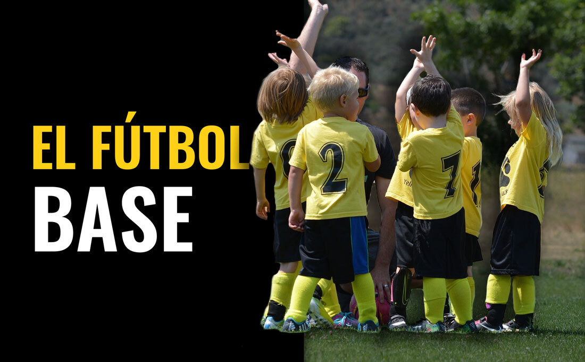

El futbol base es el conjunto de actividades en etapa de formacion dirigidas a niños y jóvenes que buscan introducirse en el fútbol.Es la etapa donde adquieren una serie de conocimientos para el futuro de este deporte.
| Categorías | Edad |
|---|---|
| Pre-benjamín | 5-7 años |
| Benjamín | 8-9 años |
| Alevín | 10-11 años |
| Infantil | 12-13 años |
| Cadete | 14-15 años |
| Juvenil | 16-18 años |